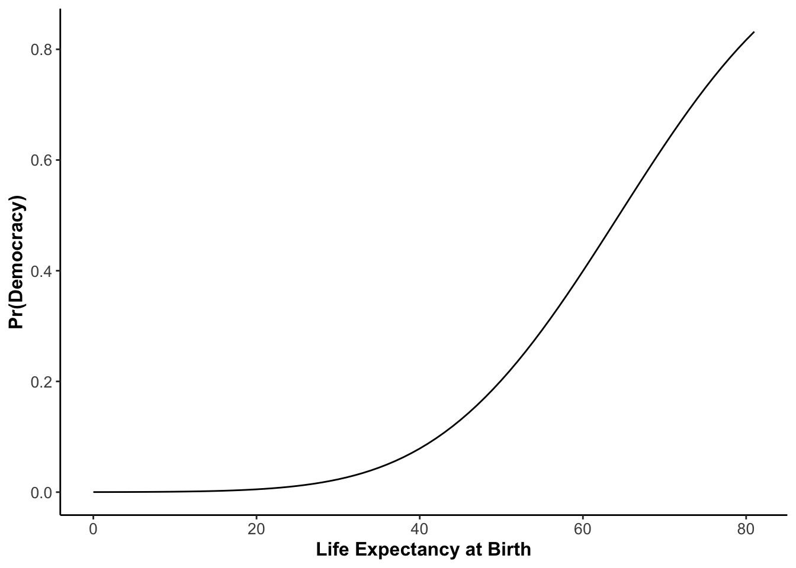

Probit – Application
The Command
The command to run a probit is as follows:
glm stands for “General Linear Model”. We then specify a model in the same way as last week, stating the dependent variable first, followed by a tilde and then the independent variable(s). We complete the command by naming the data frame we wish to use and selecting the model type, in our case it is a probit model which is binomial (our dependent variable only has two possible outcomes).
Once again, let us do a specific example with the data set “Europe” in the year 2000. First set the working directory for today’s seminar:
and then load the data set into a data frame called world which we subset to the year 2000.
world <- read.csv("files/Week 3/world.csv")
library(tidyverse)
world2000 <- filter(world, year==2000)For a probit regression, we cannot use the Polity V scale any more, because it is continuous, and not binary. We therefore switch the democracy coding to index created by Boix, Miller & Rosato in 2018. We will use life expectancy as our independent variable, and examine the situation in the year 2000. To do this, we call:
This should lead to the following results:
summary(probit)
Call:
glm(formula = democracy ~ life, family = binomial(link = "probit"),
data = world2000)
Coefficients:
Estimate Std. Error z value Pr(>|z|)
(Intercept) -3.73066 0.72586 -5.140 2.75e-07 ***
life 0.05793 0.01078 5.375 7.66e-08 ***
---
Signif. codes: 0 '***' 0.001 '**' 0.01 '*' 0.05 '.' 0.1 ' ' 1
(Dispersion parameter for binomial family taken to be 1)
Null deviance: 252.11 on 182 degrees of freedom
Residual deviance: 220.10 on 181 degrees of freedom
(8 observations deleted due to missingness)
AIC: 224.1
Number of Fisher Scoring iterations: 4The Coefficients
The coefficients are displayed in the results as follows:

But how do we interpret them? As you have seen in the Theory section above, the relationship between our independent variable and the probability of democracy is not linear: the curve was s-shaped, so that the increment in probability is not the same for, say moving from \(x_{1}\) to \(x_{2}\) and from \(x_{2}\) to \(x_{3}\). For illustration see the red bars in the following Figure:

What we therefore need to do in the world of probit, is to evaluate the probability at individual values of \(x_{i}\), or put differently, assess how much of the bell-shaped curve has slid across our cut-off point \(\tau\) (tau) at a particular point \(x_{i}\). And this brings us to predicted probabilities.
Pedicted Probabilities
Once we have estimated the model, we have determined the shape of the s-shaped curve at the start of the chapter. What we now need to do, is to evaluate the probability on the y-axis for different values on the x-axis. In our case this is the variable life.
Setting the x-values
Let us first get a basic overview of the variable life. We can do this by calling
summary(world2000$life)
Min. 1st Qu. Median Mean 3rd Qu. Max. NA's
44.52 59.46 69.58 66.49 73.84 81.08 8 So we know that the average life expectancy in the world in the year 2000 was 66.49 years,with a minimum of 44.52 years, and a maximum of 81 years. We also have eight missing observations (NA) which we need to exclude from the following by setting na.rm=TRUE4, as R is otherwise unable to calculate descriptive measures within the setx function, such as the mean. Let us set life to its mean now, by typing:
If you want to change this value for calculations later on, you simply set different values in the setx dataframe or specify a new one).
We now have the shape of the probability curve, and we have agreed on a point on the x-axis. We are finally ready to have a look at the probability to be a democracy at this point.
Predicting the Probability
The quantity of interest we are interested in is the probability of being a democracy. To calculate this quantity of interest, we use the function predict() and specify within this function for which model we want to calculate the quantity, and the data frame in which we specified the value of our x-variable. In our case this variable is life and we have assigned the mean value to an object called setx earlier.
Remember that we have put the value of life expectancy at the mean. For this level of life expectancy R returns to us a probability of being a democracy at 54.82%. Contrarily, this means that probability to be an autocracy is 45.18% (the two probabilities always sum up to 1).
Now we set life expectancy to its minimum
and calculate the quantity of interest again. Our probabilities have changed very drastically (ensure you get the same results before proceeding):
If we set life expectancy to its maximum (how?), then we receive the following regime probabilities:
Now we can make statements such as:
- In 2000, a country’s probability to be a democracy with average life expectancy was 54.82%.
- At the minimum life expectancy of 44.52 years, this probability drops by 42.35%age points to 12.47%.
- As such, a country in 2000 at minimum life expectancy would more likely be an autocracy than a democracy (why?).
All Predicted Probabilities
If you want to create a graph which depicts the predicted probability for all value sof your independent variable, then you can download the RScript for creating such a graph here. It will look like this:

How to Report Results
The question is now: how do you report all of this in an article, or closer to home, in your assessment? Let us start by calculating a model which assesses the impact of per capita GDP on the probability to be a democracy in 2000, worldwide. The R commands and output look like this:
probit <- glm(democracy ~ gdppc,
data = world2000,
family = binomial(link = "probit"))
summary(probit)
Call:
glm(formula = democracy ~ gdppc, family = binomial(link = "probit"),
data = world2000)
Coefficients:
Estimate Std. Error z value Pr(>|z|)
(Intercept) -1.621e-01 1.161e-01 -1.396 0.163
gdppc 5.128e-05 1.309e-05 3.918 8.93e-05 ***
---
Signif. codes: 0 '***' 0.001 '**' 0.01 '*' 0.05 '.' 0.1 ' ' 1
(Dispersion parameter for binomial family taken to be 1)
Null deviance: 248.48 on 180 degrees of freedom
Residual deviance: 225.62 on 179 degrees of freedom
(10 observations deleted due to missingness)
AIC: 229.62
Number of Fisher Scoring iterations: 5Now, please, please never, ever copy this into an article or an assessment, as every time you do this, a little part of me dies. Make the effort of reporting the results in a nice and neat Table, that only contains all relevant information, communicates it in an accessible form, and is clearly labelled. The output above, processed properly, would look like this:
| Dependent variable: | |
| Democracy | |
| per capita GDP | 0.0001*** |
| (0.00001) | |
| Constant | -0.162 |
| (0.116) | |
| Observations | 181 |
| Note: | p<0.1; p<0.05; p<0.01 |
You see, this table manages to convey clearly the relationship we are assessing, the label of the independent variable (not in the form of cryptic variable names), the value of the intercept, the value of the slope coefficient, their respective p-value, and the number of observations. As such, the table itself could already communicate the main take-away message without somebody looking at the text. This needs to be the goal: the table, or figure needs to be able to communicate the message without having to look at the text. In turn, the text needs to be able to communicate the message on its own without looking at the table. But both need to say the same thing.
After you have reported the results of the regression output in this way, you can then proceed to interpret (in the text) the transition probabilities as discussed above. Again, you might wish to sum up the main results in tabular format.
Stargazer
Rather than setting tables manually in Excel, or even worse in Word (it basically violates all standards of professional table formatting), you can let R do this work for you. All you need is a magical package called stargazer. I have provided some Sample Stargazer Code in the Downloads Section. Open it now, and try to understand it, I have annotated it. But here are some pointers:
The stargazer function needs to contain, in order: the name of the R object where you stored the regression results, the option header=F to suppress the annoying immortalisation of the author, the option type="html", and the option out="documentname.doc" which places a word document with that file name in your working directory.
Should you use MS Word to write your essay and your essay is saved in your working directory, do not save the table document under the same name as your essay, as R will overwrite it and it will be gone forever.
Beyond these basic elements I have added some lines in the sample code to improve the table. For example, I replaced the variable names with the variable labels, and suppressed unwanted statistics. You could also add a name for the model, or give the table a title (see https://www.rdocumentation.org/packages/stargazer/versions/5.2.3/topics/stargazer_stat_code_list).
It is worth investing some time into this. There is a learning curve at the beginning, but it will make your life so much easier further down the line.
Multiple Independent Variables
As in multiple linear regression, you can also have multiple independent variables in a probit model. Schematically this would look as follows:
probit <- glm(depvar ~ indepvar1 + indepvar2 + indepvar3,
data = dataframe,
family = binomial(link = "probit"), The fun starts when you begin to calculate probabilities for different values for all of these independent variables.
Predicting the Probability
This is very much the same as above with one independent variable. It is crucial to remember which variables you have set at which value, so that you can interpret the probability values correctly. As in linear regression, the interpretation of individual variables is ceteris paribus. It therefore makes sense, if you wish to isolate the effect of one, single variable, only to vary the values of that variable, and to leave all the other ones the same. If you varied two variables at the same time, for example, you would no doubt see a change in probability, but you could not attribute it to a single independent variable, any more.
This stands for “not available remove equals true”.↩︎